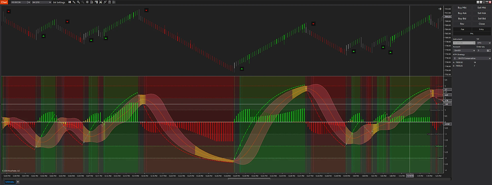

Precision Squeeze Detection. Explosive Momentum. Breakout Intelligence.
- Squeeze detection with strength tiers and a release marker on the bar the squeeze fires
- MACD-based Bollinger Bands with a five-state Trend Line, gray when momentum is neutral
- Momentum histogram, the Trend Cloud and Buy and Sell triangles when trend and momentum agree
- Overbought and oversold zones and configurable alerts for squeezes, band crosses and momentum turns
What's inside (19)
- B4 Indicator Pro · formerly B4 Indicator (free v3 indicator) Trend, momentum and squeeze in one panel under your price chart.
- B4 Squeeze (B4's own adaptive squeeze) · formerly B4 Squeeze (NinjaTrader indicator) Starts on unusually narrow bands and ends only when they clearly widen. No flicker.
- Squeeze cloud, dots and release markers Watch a squeeze build and release, with dots rated normal, strong or extreme.
- B4 Surge / Calm Zone Pressure runs scaled by time-of-day volume, and the quiet stretches between them.
- Trend Cloud A green or maroon background when RSI, Stochastic and the MACD histogram all agree.
- Trend Line A five-color line that shows whether the trend is strengthening or weakening.
- MACD-BB bands, momentum histogram Bands that turn orange in a squeeze, and a histogram of growing or fading momentum.
- Fib SuperTrend One half of the Bull / Bear trend behind the triangles, event lines and candle colors.
- RSI IFT trend The other half of the Bull / Bear trend, a second read on direction.
- Zones with ES / MES / NQ / MNQ values Overbought, trail and turbulence lines preset for your instrument.
- Candle coloring Paints your candles in the trend colors so direction shows on the price chart.
- Vertical event lines and context signals A thin line each time the trend turns, plus optional context markers.
- Configurable alerts Pick the NinjaTrader alerts you want, such as squeeze start and release.
- Buy and Sell triangles A triangle on the first bar where every trend and momentum rule agrees.
- Built-in B4 Order Flow outputs Shares its trend, signals and squeeze state with B4 Order Flow, with nothing to set up.
- Chart feed (off by default) Sends this chart's plots and marks to the B4 Tape's Event Memory.
- Signal Engine Combine sources into your own BUY and SELL arrows, starting from ready-made profiles.
- B4 CoPilot Pro integration Lets B4 CoPilot Pro count the triangles or use the trend as a filter.
- Candle color from B4 Algo Pro Paints the same candle color as B4 Algo Pro, so both tools match.
Availability: Presale · ships with the B4 V4 release.
More about B4 Indicator Pro
Preview

VISUALIZATION · Enhanced visualization based on a NinjaTrader 8 screen from a simulation account. Not a live trading result. Select an image to open it full size.
Precision Squeeze Detection. Explosive Momentum. Breakout Intelligence.
Find the compression. Read the momentum. Attack the breakout.
B4 Indicator Pro is an advanced momentum and breakout indicator for NinjaTrader 8. It helps you identify compression, detect developing momentum and expose potential volatility expansion, and it gives you more than one way to read a developing directional move.
It is built on MACD-based Bollinger Bands, squeeze and release detection, Trend Line analysis, a momentum histogram and overbought and oversold zones, all in one lower chart panel. Together they give you a framework for before, during and after a momentum breakout.
Advanced Squeeze Detection
B4 Indicator Pro uses B4's own adaptive squeeze. A squeeze starts when the MACD-BB band width ranks among the narrowest 15 percent of its last 500 bars, and it ends only when the width is back above the 35 percent mark, so it holds steady instead of flickering on and off. All three values are settings. The panel follows each squeeze from the first compressed bar to the release.
- Developing compression: a squeeze dot on the zero line on every squeeze bar, the bands change color, and an optional squeeze cloud fills the space between them.
- Sustained squeeze: the run of dots shows how long the compression has lasted, and the dots are colored and sized normal, strong or extreme as the bands tighten.
- Release points: a larger release marker with a ring on the bar the squeeze fires, colored bullish, bearish or uncertain.
- Directional momentum out of consolidation: the release direction comes from the Trend Line's slope and the momentum histogram together.
- Confirmed or not: optional text markers on the price bars (off by default) show whether a release was confirmed (a close beyond the squeeze range, with the bands widening and momentum agreeing), unconfirmed, failed or reversed.
- Short squeezes filtered: a squeeze shorter than the minimum length (2 bars by default) is treated as a flicker and gets no release.
- Weakening momentum: the Trend Line and the histogram switch to their weakening colors when a move starts to lose strength.
- Continuation or reversal: read what follows the release in the Trend Line, the bands and the histogram.
A squeeze is not a trade by itself.
Breakout Intelligence
When a squeeze releases, B4 Indicator Pro shows what the breakout is doing: its direction, its strength and how the Trend Line behaves around the bands.
- Release markers colored by direction
- Markers where the Trend Line crosses the top band, the midline or the bottom band
- Markers where the Trend Cloud starts or is lost, as momentum transitions
- Optional alerts for those band crosses and for MACD-BB crossing a level you choose: zero, lower, middle or upper
Use it for entry timing, confirmation and continuation, alongside your own plan.
The Gray Trendline Setup
The Trend Line has five states: bullish strengthening, bullish weakening, gray, bearish weakening and bearish strengthening. When the Trend Line turns gray, momentum is neutral or transitional: it is inside the bands, or flat at a band. When it moves back across a relevant band, a new opportunity may develop. Monitor:
- the transition into gray
- where the Trend Line sits relative to the top band, the midline and the bottom band
- the return across a band, marked on the panel
- the direction of the momentum histogram
- agreement with the broader trend from the Fib SuperTrend and the RSI Inverse Fisher Transform
- support from a squeeze release
The complete setup, not a color change in isolation.
Multiple Entry Opportunities
Three ways to read the same panel. They are reading methods, not separate signals or settings:
- Aggressive: early participation, as the Trend Line curls, a squeeze releases or the Trend Line moves back across a band.
- Confirmation: the Trend Line, the bands and the histogram agree. The B4 Buy and Sell triangles on the price chart appear only when the trend, the Trend Line beyond its band and the Trend Cloud all agree.
- Conservative: an established direction: the vertical event line has marked the trend turn, the Trend Cloud is in place and the Trend Line is strengthening.
Momentum Histogram
The MACD (12, 26, 9) histogram in four colors: positive and rising, positive, negative and falling, and negative. It shows:
- acceleration and deceleration of momentum
- positive and negative momentum
- how momentum changes as a breakout develops
- agreement or conflict with the Trend Line
- a move losing strength
Overbought and Oversold Intelligence
Six zone lines frame the extremes of the Trend Line: Overbought, Trail Top and Turbulence Zone Top above zero, and Turbulence Zone Bottom, Trail Bottom and Oversold below, with an optional fill and labels. Built-in values for ES, MES, NQ and MNQ, and you can set your own levels on any chart.
An extreme is not an automatic reversal signal. Strong trends can stay extended.
B4 Surge Analysis
An alternate view of the same momentum. A B4 Surge is a run of bars in which the Trend Line pushes one way. Each Surge bar's height shows how much volume drove the push, measured against what is normal for that time of day, so a surge at the open and a surge at lunch are on the same scale. A Surge bar turns half-transparent when the push is fading. The Calm Zone shades the bars where the Trend Line is neutral: inside the bands or flat. Show B4 Surge on its own or inside the standard panel.
- Calm tolerance: High ends a Surge at the first Calm Zone bar, Low tolerates one Calm Zone bar inside a run
- Compare volume with the same time of day, in 1, 5, 15 or 30-minute slots, or turn the comparison off
- A B4 Surge color scheme for the whole panel
Momentum Failure
When a move starts to fail, the panel shows it: the Trend Line turns from strengthening to weakening, the histogram fades, the Trend Cloud is lost, or the Trend Line curls against the move.
Treat it as a warning condition, not a certainty.
Expanded Alerts
Configurable NinjaTrader alerts, off by default, each with its own switch, a master switch and an optional sound:
- Squeeze conditions: Squeeze Start and Scalper Squeeze, plus a release alert for confirmed, failed and reversed releases
- Entries: Long Entry and Short Entry on the Buy and Sell triangles
- Band and level crossings: MACD-BB crossed up or down at zero, lower, middle or upper, and the Trend Line crossing the top band, the midline or the bottom band
- Momentum changes: curl pivot, Trend Cloud started and Trend Cloud lost
A Complete Momentum Trading Framework
- Squeeze detection, strength and release
- Breakout direction and band behavior
- The gray Trend Line setup
- Three ways to read an entry
- Momentum histogram
- Overbought and oversold zones
- B4 Surge and the Calm Zone
- Momentum failure warnings
- Configurable alerts
- Bullish and bearish opportunity analysis
Also Inside
- The Trend Cloud: a full-height green or maroon background where RSI (7), slow Stochastic (14, 3, 3) and the MACD histogram all agree.
- Trend state: the Fib SuperTrend and the RSI Inverse Fisher Transform, with a vertical event line in the panel when both turn together.
- Candle coloring: Trend Cloud colors, Fib SuperTrend colors, the B4 Algo Pro candle color when B4 Algo Pro is on the same chart, or your own colors.
- Full styling: every element has its own settings group for color, width, dash style, opacity, shapes and sizes.
- B4 Order Flow outputs: the signals, Trend Cloud, zone and squeeze states are published for the tape and scanner in B4 Order Flow.
- Chart feed: an optional feed, off by default, that shares this chart's plots and new marks with the B4 Order Flow tape's event memory.
- B4 CoPilot Pro signals through the B4 API: the Buy and Sell triangles count as a chart-indicator signal for B4 CoPilot Pro (on by default), with an optional confirmation direction (off by default) from the trend, the candle color or the signal bar.
The B4 Advantage
Most indicators show you what the market is doing. B4 Indicator Pro helps you evaluate how momentum is changing, and where the next opportunity may develop.
No forced direction. No dependence on a single signal. No assumption that every breakout will succeed.
Detect the squeeze. Track the momentum. Identify the setup. Execute with a plan.
B4 Indicator Pro. Built for the move. Designed for the trader.
For educational and research purposes only. Not trading advice. Trading involves substantial risk, and indicator signals do not guarantee results.